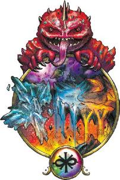
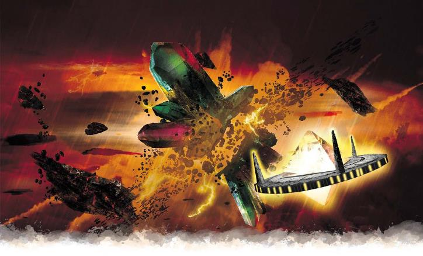

Kythri: the Churning Chaos_p169-172
原文基于July 2020. PDF Version: 1.04
翻译by Pany_Q
校对by N个月后的Pany_Q

在奇斯瑞，要保持一致的节奏是很难的。保持任何固定的行为模式都需要付出努力。在奇斯瑞，人们甚至不假思索地调整自己的行为以避免重复。这就是奇斯瑞的本质：一方面，它是杂乱无章的混沌，但它也是关于变化、适应以克服意外，以及挑战传统的。
通常认为奇斯瑞是完全不稳定的，地貌甫一形成就会瞬间沸腾消失。在被称为混沌海(the Sea of Chaos.)的这个国度的中心地带，情况正是如此。但在海的边缘，有一些岛屿能够逗留些许。这些变幻岛(Shifting Islands)的环境持续着稳定且不间断的变化；一片巨大的沙漠可能在几个小时内就变成了茂盛的雨林。但这块陆地本身保持不变，生物可以生活在这些岛屿上，只要能适应着变化多端的环境。
虽然奇斯瑞不断变化，但其元素通常是自然的。丛林变成沙漠，暴风雪变成沙尘暴——但它是由沙子组成的，而不是微小的勃兰奈尔国王的大理石半身像。这将奇斯瑞与瑟瑞奥特或达·库尔区分开来：虽然奇斯瑞也不断变化，但它通常是在合理的选项之间变化，而不是像疯狂国度和梦境异界那样的虚幻环境。
在奇斯瑞，所有东西都在变化，甚至包括时间和未来。唯一真正可靠的东西是：没有什么是可靠的。
破碎节奏(Broken Rhythms)：一个生物不能连续两个回合采取完全相同的行动。若其之前站着不动，则之后必须移动。若其之前移动过，则之后可以站着不动或移动不同的距离。一个生物可以连续两个回合都施法，但不能是同一个法术。一个生物可以连续两个回合都进行攻击，但第二次攻击必须在风格上被描述为与之前的攻击完全不同。
流变形体(Fluid in Form)：当一个生物施展变化学派法术时，其范围增加一倍；若其持续时间至少为1分钟但少于24小时，则持续时间也增加一倍。
拥抱未知(Embrace the Unknown)：当一个生物要施展1环或更高环的预言学派法术时，其必须成功通过一个施法关键属性检定，DC等于12+该法术环级。若检定失败，该法术不被施放，其法术位也不会被消耗，但该动作视作已使用。在其他位面施放的预言学派法术不能影响或针对位于奇斯瑞的生物、地点或物品。
无间常变(Constant Change)：在奇斯瑞没有什么是完全不变的。每当一个生物完成了一次短休或长休，就会发现自己或自己身上的物品发生了一些变化。每个玩家都应该描述他们角色的变化；这可以很简单，比如你的斗篷变了颜色，或者你的剑现在有了时尚的安黛尔设计，而它原本是坎纳斯款式的。你可以选择生理上的变化：你的皮肤、发型或性别，也可以选择精神上的变化：你突然讨厌橄榄，或者不再相信天命诸神。这些变化没有游戏机制上的影响：你口袋里的硬币可能样式变了，但铜币不会变成白金币。如果你想让一个变化产生实质上的影响——例如，如果你的牧师的信仰或种族发生了变化，并且你想让你的角色卡反映出这一点——与你的GM讨论这些可能性。

大部分奇斯瑞的居民都可归入以下三个类别之一。
奇斯瑞的岛屿上有生物居住。但是，一个生物如何能在今天是沙漠，明天是冰川的环境中生存？答案自然是——生物必须随着环境的变化而变化。奇斯瑞的岛屿上有一些生物似乎是自然的野兽，尽管它们会随着周围地区的变化而变化；一只森林狼，在当土地变成冰川时，会变成极地狼，而当土地变成沙漠时，又会变成豺狼。即使在为生存而进行的必要变化之外，奇斯瑞的生物页可能会不断地改变它们的羽毛、行为和更深层的生理特性，这些变化变化可能随时在进行，也可能间隔数天。
然而，并不是所有奇斯瑞的野物都会变成人们所熟知的形态。这个位面的核心概念之一就是随变化而演化，奇斯瑞有着许多融合了两种或更多自然野兽特征的生物：如枭熊、狮鹫及奇美拉等怪兽。普遍认为，这些怪兽中至少有一部分最早出现在奇斯瑞，然后通过传送门或由于显能区的影响而在艾伯伦现身。
奇斯瑞的环境虽然是混沌的，但在很大程度上是自然元素的融合——奇斯瑞的怪兽也是如此，它们通常是自然生物形式的融合。奇斯瑞有鹫马(hippogriff)和狮鹫(griffon)，但这里并没有发现像镰虫兽(kruthik)或穴居攫怪(grick)这样的天生异形的生物。奇斯瑞的野物还包括自然的变形生物(shapechanger)，特别是各种各样的拟身怪(mimic)——其中甚至有着体型巨大到能够模仿丘陵或者山脉之类的自然景观的个体。很可能艾伯伦的拟身怪要么是从奇斯瑞迁移过来的，要么是受其影响而创造的，就像永恒霸权(Eternal Dominion)的沙华鱼人(sahuagin)使用与奇斯瑞相连的卡尔’拉萨*(kar'lassa)之血来创造出变异质粒**(plasmid)一样。
译注*：卡尔’拉萨kar'lassa，见p129，第四章-雷霆海部分；
译注**：变异质粒plasmids，见p246，第八章-朋友与敌人
若是在其他位面，这些野物就很可能就是显能现象了，但在奇斯瑞却不同，这里的野物都是凡俗生物(mortal)。它们（基本上）遵循自然的方式生存、繁衍和死亡，并且得在各自的岛上觅食和寻找庇护所。这里的时间流动异常，生存环境特殊，这可能导致种群数量急剧增加或突然灭绝。然而，位面本身会将新的生命的种子播撒到那些以某种方式变得荒芜的岛屿上，如果奇斯瑞的所有狮鹫都死了，新的狮鹫终究会演化出来。因此，即使奇斯瑞没有位面显能现象，它也能确保有源源不断的凡俗生物存在——当它们死亡时，就会补充新的。
史拉蟾是奇斯瑞原生的不灭者(immortal)。虽然他们确实会繁殖（以奇怪和令人不安的方式），并可能死于凡俗的疾病，但他们仍被定义为不灭者——这是因为他们的总数量是保持不变的。无论以哪种方式，每当一个新的史拉蟾以诞生，就会有一个现存的史拉蟾个体以某种看起来随机的方式死亡。而每当一个史拉蟾被杀死，就会有一个新的史拉蟾形成。因此，虽然史拉蟾看起来似乎与凡俗生物有许多共同的特征，但是，即使他们大规模死亡，也不会灭绝；同样，即使一个史拉蓝蟾(blue slaad)用混沌噬菌体(chaos phage)将一个村庄的人类全变成了史拉蟾，史拉蟾的总数量也不会因此增加。
史拉蟾是奇斯瑞唯一的原生文明。不过他们并不是一个大一统的社会；他们有些生活在大都市中，有些则生活小村落里。每个史拉蟾社群都有自己独特的文化和一个响亮的名字，下述《史拉蟾文化表》(Slaad Cultures table)提供了一些例子——但实际还有更多，且总是在不断变化。宏伟的磐石城(city of Cornerstone)今天可能是冷酷的“钢铁协约”( Concordance of Iron)的首府，而一个月后则是“启蒙文艺学院联盟”(the Enlightened Lyceum League)的中心。这些变化快得惊人，但也不是一瞬间就结束的；通常在一次变化之间至少有几天的混乱过渡和革命时期。一个社区的体量保持不变，比如磐石城永远是一个大都市，而翻转村(Turn)永远是一个村庄，但是社群的社会结构会改变。在钢铁协约的统治下，磐石城充满了野兽派的铁塔，而文艺学院联盟领导下的磐石城则遍地是纤细的玻璃尖塔。
史拉蟾本身保留其核心形态，而他们建筑和政府则发生了变化。史拉红蟾(red slaad)总是红色的蛤蟆状生物，会植入史拉蟾卵，只不过文艺学院的史拉蟾可能高大而纤细，而钢铁协约的史拉蟾可能低矮而壮实。奇斯瑞的影响也能使史拉蟾改变颜色。因此，虽然史拉蟾在创造特定颜色的个体时依然遵循标准的方法，比如史拉蓝蟾(blue slaad)通过混沌噬菌体感染生物，进而创造出红蟾或绿蟾；但同时，一个史拉绿蟾(green slaad)可能某天晚上睡一觉醒来就变成了史拉亡蟾(death slaad)，反之亦然。在像钢铁协约这样的文化中，这意味着领导层会经常变化，因为其地位是基于颜色的，而不是基于个体的品质。
由于史拉蟾的文化变化得如此之快，他们很少制定超出自己社群存在时间的长期计划，尽管城市之间偶尔会发生冲突。有些星期，他们试图消灭吉斯泽莱人(githzerai)，而另一些星期，则与他们结盟。你永远不知道你会得到什么。
|
d6 |
文化Culture |
|
1 |
伟大钢铁协约(the Grand Concordance of Iron)是一个冷酷无情的政权，它打算征服所有的史拉蟾，然后征服整个多元宇宙。它有着严格的种姓制度，其中，史拉亡蟾是残忍的暴君，且所有的史拉蟾都在军队中服役。 |
|
2 |
启蒙文艺学院联盟(the Enlightened Lyceum League)是一个由学者和哲学家组成的民主社会。他们坚信要为每一个问题找到一个和平的解决方案，为每一个疑问找到一个合乎逻辑的答案。 |
|
3 |
终末摄政团(the Final Regency)宣称，天命诸神已经抛弃了这个现实，并命令摄政团的史拉蟾们代替祂们统治多元宇宙，直到祂们回归。摄政团狂热地献身于一个史拉蟾版本的天命诸神信仰，并且任何其他“不准确”的版本都可能激怒他们。 |
|
4 |
光荣肉体联盟(the Glorious Union of Flesh)宣称，史拉蟾是生命的终极形态，并试图通过混沌噬菌体将成为史拉蟾的资格赋予所有类人生物。他们不接受史拉蟾的数量会一直保持不变这一观点——显然，那只是因为之前的史拉蟾文化的做法都不对。 |
|
5 |
现实汇聚体(the Confluence of Reality)认为每个文明都有值得效仿的地方，并研究其他文化以找到这些东西。在一个汇聚体社区里，你可以看到史拉蟾吃着安黛尔式可丽饼，玩艾伦诺风的征服棋，辩论达安维法律的精妙之处。 |
|
6 |
波’欧勃共和国(the Republic of B'ob)是由一名史拉红蟾统治的，只要他想，就会制定新的法律。为什么是波’欧勃掌权？嗯，因为这是他制定的第一条法律，也是他唯一没有改变的一条。而且他是波’欧勃！除了他还有谁会掌权呢？ |
吉斯泽莱人并不是奇斯瑞的本土居民，他们在这里的存在本身就是一种反抗：通过无与伦比的精神纪律，他们在混乱的中心创造了秩序的堡垒。如果他们寻求秩序，为什么他们不居住在达安维？他们并不仅仅渴望秩序，更是要通过把秩序强加给一个绝对违背秩序的现实来磨练他们的意志。斗争就是目的。除此以外，他们在这里还能获得另一个好处：即使是强大的力量也无法探知到奇斯瑞内部。《艾伯伦与吉斯人》边栏解释了吉斯人是如何来到奇斯瑞的，以及他们想要实现的目标。
吉斯泽莱人并不居住在奇斯瑞的变幻岛上，而是在混沌之海中创造出了自己的岛屿：有如小镇般大小的巨大修道院式飞船；这些飞船对抗着奇斯瑞的转化力量，穿行在混沌的漩涡之中。吉斯泽拉人专注于冥想和自我修行，对修道院之外的事务兴趣寥寥。他们并不特别喜欢外来者——他们认为艾伯伦的所有生物都不过是他们那被窃取的现实的扭曲残影，但他们也不是天生敌对。一队能言会道的冒险者能够在吉斯泽莱的修道院找到短暂的庇护，特别是如果他们带来了有趣的交易品或扣人心弦的故事来分享。然而，一旦外来者冒犯了吉斯泽莱人，他们会毫无遗憾地消灭外来者；毕竟，用光明驱散阴影是毫无罪恶的。
|
边栏p171 艾伯伦与吉斯人EBERRON AND THE GITH很久以前，一个骄傲的帝国被异变魔毁灭了。但这里说的并不是达坎帝国，而是一个由天赋高超的心灵能力者组成的国家，他们居住在使用晶钢(crysteel)和心质(sentira)建造的高塔中。腐化者迪恩(Dyrrn the Corruptor)将他们的勇士转化成了第一批灵吸怪(illithids)，用作活的武器镇压他们自己的人民。当败北无可避免，伟大领袖吉斯(the great leader Gith)带领族人进行了一场位面大逃亡，逃到了奇斯瑞。混沌漩涡掩盖了这些逃难者的踪迹，而通过绝对的纪律，他们在混沌之中强行建立了稳定。 当逃难者们恢复了力量，激烈的分歧却出现了。智者泽锡蒙(Zerthimon the Wise)坚信，吉斯的人民应该留在奇斯瑞。他相信精神的纪律是胜利的最终关键，假以时日，他们就可以重获夺回现实的力量。但吉斯是一名战士，她的追随者们渴望战斗。他们想要掠夺现实的每一个位面来为自己积蓄力量和资源，直到他们最终找到摧毁瑟瑞奥特的方法。 这种情况持续至今。吉斯泽莱人栖身在他们位于奇斯瑞的修道院飞船中，通过从不停歇地将秩序强加于混沌之上的过程来增强力量。吉斯洋基人则居住在如城市般巨大的要塞战舰中，停泊在人迹罕至的星界荒原之上，而吉斯洋基掠夺者能够对任何位面发动袭击。他们屠戮撒法拉斯(Shavarath)的魔鬼，掠夺费尼亚(Fernia)的盛大晚宴。任何时候，吉斯洋基战舰都可能攻击科瓦雷的某座主要城市；这种事是否曾经发生过，或者吉斯洋基人选择不对艾伯伦动手，则取决于DM。另外，可以让一名吉斯坦基商人可以成为一个常驻NPC，时不时出现在角色们面前并提供从各个位面掠夺来的物品。吉斯泽莱人是安静而自律的，吉斯扬基人则性格炽烈而具有侵略性。所有的吉斯人都视异变魔为仇敌，只要有机会就会杀死灵吸怪；他们可能会在你在对抗黄泉巨龙会时成为意想不到的古怪盟友。 人们听到这个故事后可能会问：吉斯人来自哪里？他们来自艾伯伦——但不是如今存在的这个艾伯伦。他们来自一个被西伯瑞斯之环包围的世界，但在他们的艾伯伦上没有人类或精灵。根据吉斯泽莱人的说法，异变魔完成了在在艾伯伦的计划，并将吉斯人的世界从存在中彻底抹去，然后创造了一个全新的现实。如果这是真的，异变魔可能已经这样做了无数次......而且如果他们打破了护门者的封印，这样的事就可能再度上演。吉斯泽莱人的最终目标，就是令他们的现实重回物质位面。 这一切可能都只是吉斯人一厢情愿的妄想。即使吉斯人的传说是真的，他们是否有力量改写现实也值得怀疑。但能将这说法完全抛诸脑后吗？值得注意的是，吉斯洋基人的龙族盟友也来自于吉斯人的旧世界，他们是另一个艾伯伦中的龙的后裔；这些龙并不效忠于阿贡尼森，他们可能会是一张难以预测的野牌。 在奇斯瑞和星界，时间的流动是怪异的，吉斯人可能已经以奇斯瑞为据点掠夺其他现实数千年了，也可能从他们的角度来看，现实的毁灭仅仅是一个世纪前的事。吉斯洋基人的领袖究竟是一位古老的巫妖女王，还是吉斯本人？ |
没有人知道是否有更高级的力量在塑造着奇斯瑞。史拉亡蟾(death slaadi)确实是强大的存在，但就已知来说，这里没有能够等同于杜鲁尔的死者女王(Queen of the Dead)或达·库尔的伊尔·拉什塔瓦(il-Lashtavar)的存在。一部分智者断言，在混沌海(Sea of Chaos)的中心一定有一个意识，一个在混沌背后的智能，但即使真的如此，它的存在从未被证实。
与大多数位面不同，奇斯瑞并没有划分为不同的位层。它的结构更接近于达·库尔；它有一个位面核心，诸多不同的现实的岛屿悬浮在混沌海(Sea of Chaos)之中。不过，与拥有稳定核心的达·库尔不同，在奇斯瑞，你越是接近混沌海的中心，环境越发变幻莫测。
诸多史拉蟾社区分布在各个变幻岛(Shifting Islands)上，至少有五六艘吉斯泽莱人的修道院飞船行驶在混沌海中。下述的磐石城(Cornerstone)和哲瑟伦·IV号(Zertherun IV)可以作为提供灵感的例子。
空间在混沌海中没有什么意义。物质、距离和重力都在不断变化。土地和生物在瞬间出现，又在瞬间消散。闪电群、熔岩流和飓风不断改变方向。虽然构成这些景观的元素可能是普通的——这与与瑟瑞奥特的超现实景观不同，大小在这里没有什么意义。一只千尺长的龙龟(dragon turtle)可能会突然冒出来试图吞掉旅行者，然后又变成一座岛屿。
在混沌海旅行是一项纯粹由意志驱动的行为。旅行者必须用极大的精神集中力将位移和距离的概念强加给环境，同时还要保护他们所乘坐的交通工具不被破坏或改造。GM可以通过一系列属性检定来反映旅程的这一特点，或者直接要求冒险者在尝试渡海之前找到一个能够完成这次旅行的船长和载具。无论如何，要想成功旅行，冒险者必须知道他们想去哪里；如果没有一个目的地作为概念上的锚点，他们很快就会在某个不知名的变幻岛(Shifting Island)上撞得粉身碎骨。
混沌海的边缘有着无数的岛屿，大小不一，环境各异。它们总在不断变化，但变化较慢；一个岛屿从贫瘠的沙漠转变为青翠的丛林，可能花费一天到一周时间。天气通常更加善变，而且常常与环境相悖；一片广阔的沙漠可能突然面临一场戏剧性的暴风雪。DM可以使用《城主指南》第5章中的表格来决定天气，只要觉得有趣就可以随时再次投骰。该章中的其他表格对于决定一个岛屿的混乱场景也相当有用；遗迹(Monuments)随机表和诡异地点(Weird Locales)随机表可以为随机发现提供灵感，当然DM可以根据故事和主题来调整它们。另外请记住，奇斯瑞是各种体型的拟身怪(mimic)的家园；某座奇异的纪念碑可能其实是一只巨大的拟身怪！
变幻岛的居民主要是融合了多种生物特征的怪兽(monstrosities)和野兽(beasts)。生物种群会扩大或收缩，且不一定具有可持续性，所以冒险者可能发现某个高原充满了狮鹫(Griffon)，或者一片地区中每只奇美拉(Chimera)都有着不同的头部组合。岛上的智慧居民几乎都是史拉蟾(slaad)，但他们不一定具有敌意。本节前面的《史拉蟾文化表》(Slaad Cultures)可以为他们的动机提供点子，《城主指南》第五章的随机聚居地(Random Settlements)表可以随机地生成一个史拉蟾社区。种族关系(Race Relations)随机表可以表示不同颜色的史拉蟾之间的关系，也可以代表他们与智慧怪兽或位面旅行者之间的关系；其中“少数族裔作为统治者”结果可能意味着某个史拉蟾村落会将冒险者们当作神来崇拜！
磐石城(Cornerstone)是最大的史拉蟾城市。它的建筑风格和具体布局总在不断变化，但它始终是一座容纳着数十万史拉蟾的连绵不绝的超级都市。当磐石城处于钢铁协约Concordance of Iron)治下，这里就会有大量正在训练的军队（尽管他们的战术和军事单位总是在变）。当它处于终末摄政团(the Final Regency)的影响下，这里会有巨大的寺庙和无数的圣殿，供奉着史拉蟾版本的天命诸神。《城主指南》中的随机聚居地(Random Settlements)表在这里可以用来确定当前政体的具体特征。
史拉蟾对冒险者的态度取决于当前活跃的文化，终末摄政团(the Final Regency)可能会欢迎那些宣称献身于天命诸神的冒险者，只要他们不对摄政团版的诠释提出质疑。现实汇聚体(the Confluence of Reality)会庆祝异位面访客的到来，渴望他们的故事和表演。而光荣肉体联盟(the Glorious Union of Flesh)治下的的磐石城是一个非常危险的地方! 不管怎么说，磐石城都是获得奇斯瑞神器或魔法服务的最佳场所。
哲瑟伦·IV号(Zertherun IV)是吉斯泽莱人的修道院飞船之一。飞船的领航者，宁静·阿泽拉(Serene Azera)，以其严格自律的精神力维持着船的稳定。高级僧侣阿拉哲斯·埃勒蒙(Alazerth Elemon)负责与外来者打交道——有时是外交谈判，有时则是带领泽锡修士(zerth)们来保卫飞船免于攻击。像大多数吉斯泽莱人一样，埃勒蒙对外来者既没有固有的敌意，也没有太多好感；他的反应完全取决于来访者的第一印象和所作所为。
奇斯瑞的破碎节奏(Broken Rhythms)和概率异常(The Odds Are Odd)特性在吉斯泽莱的修道院中不起作用，无间常变(Constant Change)虽然仍在，但其影响已被降到了最低。哲瑟伦·IV号设有吸收变化能量的缓冲装置，例如放满小石子的花园，和刻有变化着的图案的圆盘，它们会吸收变化的能量，防止其对飞船造成改变。
以下是奇斯瑞能够影响物质位面的一些方式。
奇斯瑞的显能区域往往在细节的层面上难以预测。其气候模式可能与周围的地区截然不同，还会在一瞬间发生变化。奇斯瑞位面的共通特性也会在其显能区中展现。任何具有无间常变(Constant Change)特性的奇斯瑞显能区都可能产生怪兽(monstrosities)。具有流变形体(Fluid in Form)特性的显能区可以增强变化系魔法(transmutation magic)的效果，并能极大提高培养魔育动物(magebreeding)的成功率；这些区域对瓦塔利斯家族( House Vadalis)来说是非常宝贵的资源。
显能区域有时会成为连接奇斯瑞与艾伯伦的传送门，奇斯瑞的生物可能借此溜进艾伯伦——或有意或无意的。许多怪兽会在荒野中安家，而其他生物——如史拉蟾——则会带来非常不寻常的遭遇，具体取决于他们来自哪种文化。
奇斯瑞的相接和远离的周期完全不可预测，从几天到几个世纪都有。奇怪的是，该位面与艾伯伦的远近并不会产生可观测的影响。
来自奇斯瑞显能区域的材料对制作变化系或幻术系相关的魔法物品往往是不可或缺的；变装布*(shiftweave)会使用到从奇斯瑞显能区所收割的植物的纤维；而正如第四章中提到的，哈尔’奇斯(Hal'kyth)显能区在永恒霸权(Eternal Dominion)的变化系工业中起到关键作用。来自奇斯瑞的物品可能会有不可预知的效果。比如，一顶来自奇斯瑞的易容帽(Hat of Disguise)只有当它的佩戴者有意识地一直想象着自己想要的样子时才会正常运作，一旦佩戴者对外观的意识松懈了，它就会缓慢但持续地改变一些微小的元素。
*译注：shiftweave，5e译百变外套，3R译变装布；鉴于它其实是布料而不是衣服，而且只有五件而不是百件，所以沿用3R翻译。
来自奇斯瑞的造访令人激动，而意料之外的变幻岛之旅也很容易成为冒险的源泉；冒险者们能否在被混沌漩涡吞噬之前找到回去的路？这里有一些点子可以提供灵感。
瓦塔利斯公园(Vadalis Park)：终末战争结束后，龙纹家族都在在寻找新的收入来源。贾兰·D·瓦塔利斯(Jalan d'Vadalis)——一位杰出的魔育动物繁育师，建立了一座可供游人与种类繁多的奇特怪兽互动的度假村，其中也包括一些他自己创造的怪兽。这座公园建在奇斯瑞显能区上，而且贾兰还未意识到，无间常变(Constant Change)特性正在破坏他的安保系统，并使他的怪兽们发生危险的变异。贾兰只考虑自己能否做到，却没有没有停下来思考是否应该......
恐怖之船(Terror at Sea)：冒险者们在海上航行时，精准地在一个错误的时间通过了奇斯瑞的显能区域，一只来自肉体联盟(the Union of Flesh)的史拉蓝蟾或史拉红蟾溜上了船。它或感染或将卵植入了一些乘客，并尽力躲藏起来。冒险者们能否在为时已晚之前击败这个潜伏的威胁？还是这艘船会被一波新生的史拉蟾占领？
超级巨星(Superstars)：一只史拉灰蟾出现在冒险者们面前并介绍了自己。它来自现实汇聚体(the Confluence of Reality)，想把冒险者作为他们文化的代表带到磐石城(Cornerstone)展示。这能出什么问题呢？好吧，虽然汇聚体通常是和平的，但这次它想让冒险者代表他们的文化参加一场大规模的跨位面角斗比赛。他们能打败来自艾伯伦各地和其他位面的代表们吗？还是说唯一的生存希望就是逃进混沌海，试图找到另一条回家的路？
猎杀(The Hunt)：冒险者们不小心闯进入了一场激烈的战斗：三个吉斯泽莱人被超越肉体联盟(Transcendent Flesh)的邪教徒伏击。只有一人在战斗中幸存下来。这位泽锡修士(zerth)与这支教派的灵吸怪(Illithid)首领有某种心灵上的联系，并决心要扳倒这个夺心魔(mind flayer)。冒险者们是否会选择与这位泽锡修士合作，结束这一威胁？这仅仅只是为了猎杀吗，还是说这位吉斯泽莱人另有别的隐藏计划？
*[非翻译者]译注：第一个捏他《侏罗纪公园》，第二个捏他《异形》，第三个捏他看不太出来（电影知识库有限orz，知道的望告知，个人觉得是1999年的《银河追缉令Galaxy Quest》），第四个捏他《铁血战士VS异形》